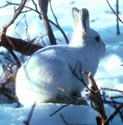

Sunday, December the 5th, 2004
back to: title, date or indexes
The pigs needed feeding, so Constance took a big crate full of apples and trudged out in the morning drizzle. The apples were pippins, and mostly rotten, but she knew that the pigs would guzzle them down. Over by the aircraft hangar a flop-eared bunny rabbit was hopping about among a pile of abandoned pots and pans. Constance worried about rust, but not today. She tipped the apples into the pigsty, put the empty crate onto a pile of other empty crates, and headed off towards the orchard as dawn was breaking. Constance had an assignation in the orchard.
The following day, before her assignation, Constance not only fed the pigs with a crate full of overripe plums, but she gathered up all the pots and pans strewn around the door of the aircraft hangar and derusted them with a derusting solution of her own devising. The flop-eared bunny rabbit was nowhere to be seen, but she saw an Arctic hare on the horizon. Then she trotted off excitedly to the orchard.

This is what an Arctic hare looks like
On the Thursday, she was late getting to the orchard for her assignation, because one of the pigs had contracted a lethal pig disease, and she ran across the muddy fields to call the local veterinary surgeon, a mutton-chopped old fool with watery eyes. He was still abed, and Constance knocked and knocked on his door to rouse him. When he eventually came down in his dressing gown, not quite awake, and unlatched his door, the following dialogue took place:
Constance : Vet, vet, I have a sick pig!
Veterinary Surgeon : Let me get dressed and put all the necessaries in my bag and I will come with you.
Constance : Hurry, hurry, vet! The pig may die!
Veterinary Surgeon : I will do my utmost to save your pig.
Because Constance had run across the fields to call the veterinary surgeon, she was late for her assignation in the orchard. When she got there, at last, she found a note fastened to a withered old pugton tree. She read only half of it before hot tears welled up and she fled from the orchard sobbing and bereft.
Back at the pigsty, the watery-eyed veterinary surgeon was packing up his bag. Constance blundered through the gate, fraught and weeping and wild-eyed.
Veterinary Surgeon : I have cured the pig, Miss Constance. All will be well.
Constance, Bereft : The Motion Picture is currently in production, starring Cher as Constance and Kevin Costner as the veterinary surgeon.
Hooting Yard on the Air, December the 15th, 2004 : “The Swiss Family Robinson” (starts around 26:28)
Hooting Yard on the Air, August the 30th, 2006 : “Radio Transcript” (starts around 16:27)